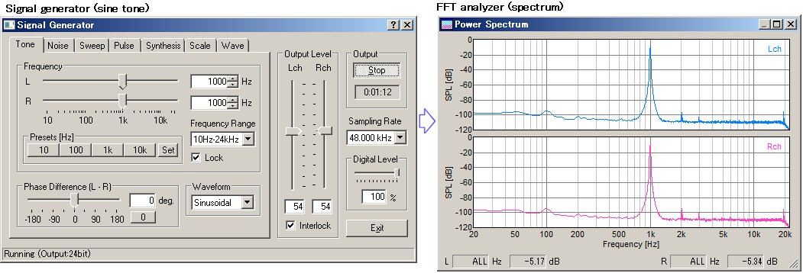
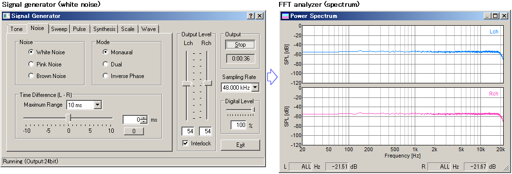
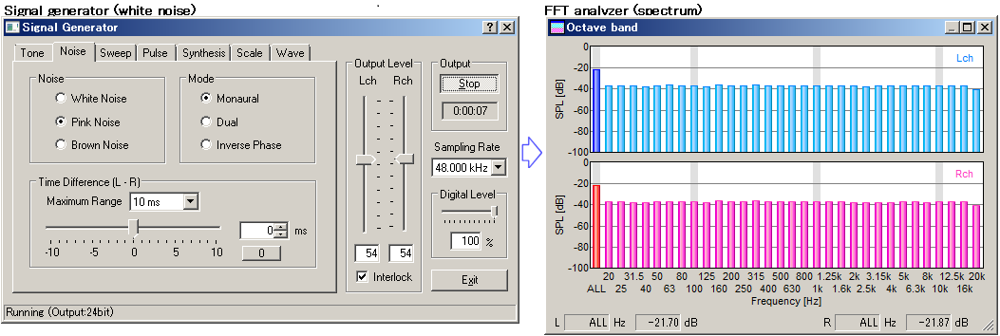
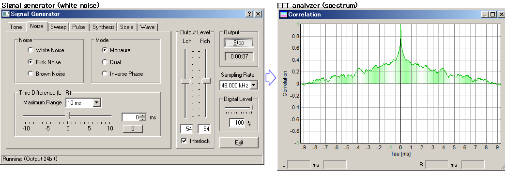

DSSF3 > RA > Operation Guide > Basic measurement procedure
Measurement by the FFT analyzer
FFT analyzer is a powerful tool for measuring sound in real time. Spectrum, Octave band, Waterfall, and Correlation meter can be used with the signal generator as follows.
Sinusoidal (sine) tone is the most basic test signal. By feeding a sine tone to an audio equipment and measuring its output by the power spectrum, you can see whether the signal frequency is correctly transmitted. Extra components would appear if there is some problem.
This is a very important test for checking if the audio system is working correctly. It is also very effective for the diagnosis and maintenance of the system. Abnormalities such as distortion, oscillation, noise, are easily detected.
Figures below show the power spectrum of a 1kHz sine tone. Both channels measure the same signal, but the spectra are different. It is because the output level of the right channel signal is too high. If the signal is clipped (distorted) like this, the resultant spectrum will include many harmonic components in addition to the fundamental component. It is important to know the appropriate volume settings before the measurement. Adjustment before a measurement

By using the noise generator and the power spectrum, frequency response of audio equipments is measured. The figure below is a result of the measurement for the signal generator's output itself. This is done by selecting the "wave" as an input device, starting the output of white noise in the signal generator, and starting the spectrum analyzer. If you connect the PC's output to the external device and measure its output, the frequency response of the device is easily measured.

Next example is a combination of pink noise and the octave band analyzer. Pink noise is similar to white noise, but the energy decreases in relation to its frequency. In audio measurement, pink noise is more popular than white noise, because white noise is sometimes dangerous for loudspeakers due to its high energy in the high frequency ranges. To measure the frequency response by use of the pink noise, the octave band analysis is used. As shown in the figure below, the octave band spectrum of pink noise becomes flat.

Octave band analyzer can also be used for measuring environmental noise. Limited function of the standard sound level meter can be greatly extended.
Next, sweep signal is measured by the waterfall display. Waterfall is the three dimensional expression of a time series of the power spectrum (time-frequency-energy).

The combination of the sweep signal and the waterfall measurement is a useful tool for checking the dynamic characteristic of loudspeakers. It is quite effective for measuring the dynamic characteristics of the loudspeaker with the crossover network. Frequency response curve can be drawn by the sweep signal too. See the following application note.
DSSF3 > RA > Operation Guide > Basic measurement procedure